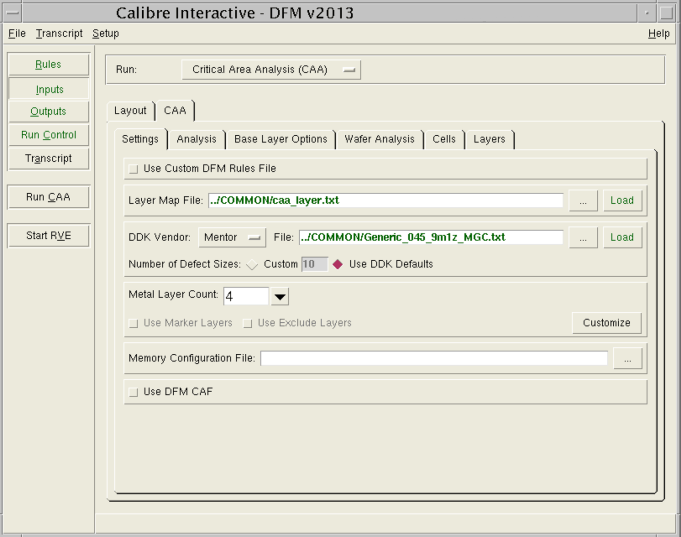

For example:
calibre -gui -dfmIn the Inputs pane, for Run, choose Critical Area Analysis (CAA). Click the CAA tab. Table 1 contains descriptions of the options available in the Settings, Analysis, Base Layer Options, Wafer Analysis, Cells, and Layers tabs.

Control |
Description |
Recommendation |
|---|---|---|
Settings Tab |
||
Use Custom DFM Rules File |
Allows you to specify a custom DFM rule file in the Rules pane and bypass all options in the Calibre Critical Area Analysis tool. |
|
Layer Map File |
Path to the CAA Layers File mapping technology layer names to Mentor standard layer names. |
See “Example 1”. |
DDK Vendor |
Selects the defect input type. UMC has encrypted format. The Mentor format may or may not be encrypted. |
|
File |
Path to the defect file. |
|
Number of Defect Sizes |
The number of defect sizes read from the DDK Vendor file. |
|
pfx File, pfx Password |
Path to a valid pfx file, and specification of the pfx password. Applicable to UMC defect input only. |
|
Metal Layer Count |
Allows you to specify how many layers to use in the analysis. |
Use the Customize button to specifically select or deselect individual layers. |
Use Marker Layers |
Enables use of marker layers. Refer to “CAA Analysis with Marker Layers”. |
|
Use Exclude Layers |
Enables use of exclusion layers. Refer to “CAA Analysis with Exclusion Layers”. |
|
Memory Configuration File |
Path to an optional memory configuration file. Refer to “CAA Analysis with Memory Redundancy”. This path is not enabled for the “CAA NDD Flow”. |
|
Use DFM CAF |
Performs the analysis using the DFM CAF operation. |
|
Analysis Tab |
||
Yield Model |
Specifies the formula used to calculate yield inside DFM Analyze. Lambda is calculated automatically. The yield models are not enabled for the “CAA NDD Flow”. |
Poisson is the only yield model certified by most foundries. |
Model: Average Quality Metric |
Specifies the formula that is used for CAA DFM scoring, not for yield prediction. Used only for the “CAA NDD Flow”. |
Only enabled when defect density data is specified as “NA” in the defect file for the CAA NDD flow. |
Analysis |
Specify the types of critical area to locate on wires:
|
SHORT and OPENWIRE. |
Exclude Gate Edge |
When analyzing for shorts, lets you exclude gate edges from the analysis. |
|
CA Overlap |
When enabled, critical areas where a large enough defect could cause both an open and a short are analyzed and counted only once. When disabled, open and short critical areas are analyzed independently. |
The net result in CA Overlap mode is a slightly higher yield prediction (approximately 2-5% on full chip runs). |
Short Depth |
The minimum overlap depth you believe causes a short. |
|
Use METRIC OCTAGONAL |
Enables the METRIC OCTAGONAL option for DFM CAF and sets the metric_octagonal variable in the TVF rule deck. In the runset file, this option is saved as “*dfmOctagonalMetric”. DFM CAF supports this octagonal metric only for short analysis. Selecting this option also sets the TVF Rule deck variable “metric_square” which controls the METRIC SQUARE option (the default) for DFM CAF. |
Use for a layout that has 45 degree and rectilinear shapes. This option is only available when Use DFM CAF is selected in the Settings tab. |
Open Depth |
The maximum depth of material you believe must remain if current is to flow properly. |
|
Via Analysis:
|
Specify the type of critical area to locate for vias: Single, Electrical, or Open. The Single option is a geometric check. The Single option multiplies the single via count by the single via failure rate to calculate the Lambda value. The Electrical option detects loops in cases where the geometric check would identify a via as single. The Open option checks a via shape for opens. The Open option uses an approach similar to the OPENUWIRE + OPENVIA analysis for metal layers. |
Most foundries provide the single via failure rate, allowing you to use Single or Electrical Via. |
Via Depth |
The size of material that must be specified when using the OPEN option. This is the maximum depth of material you believe must remain if current is to flow properly. |
|
Inter Layer Short |
Enables inter-layer short analysis. When selected, this option checks for defects between layers. Defect density is checked, not the defect size. Inter-layer shorts are detected between layers that have been selected in the Layers tab. |
Use with By Net analysis. |
Use REGION OCTAGONAL |
Enables the REGION OCTAGONAL option for DFM Critical Area and sets the region_octagonal variable in the TVF rule deck. In the runset file, this option is saved as “*dfmOctagonalRegion”. Selecting this option also sets the TVF Rule deck variable “metric_square” which controls the METRIC SQUARE option for DFM Critical Area. |
Use for a layout that has 45 degree and rectilinear shapes. This option is only available when Use DFM CAF is not selected in the Settings tab. |
Partition |
Specifies the types of partitioning to use for analysis and reporting. You can select By Chip or By Library, By Window (only with By Chip), By Cell or By Net. For By Library, refer to “CAA Library Flow Cell Orientations” for further details on defining cell orientations. Refer to “Partitioning”. |
If you select By Window, you must also specify a WINDOW Size. |
Win Size |
Defines the WINDOW Size when Partitioning by Window. |
The default window size is 50 um. |
By Cell |
Enables By Cell partitioning to use for analysis and reporting. For By Cell and By Net, specify items in include or exclude using the Specify List button. |
|
By Net |
Enables By Net partitioning to use for analysis and reporting. You can specify a list of nets to include using the Specify List button. Note that By Net is enabled only when the Use DFM CAF option is enabled in the Settings tab. |
|
CA Output
|
Instructs the tool to write results to the DFM database and defines which results to output:
|
Use None to save runtime and generate reports without writing results. Note that None is required when using DFM CAF. |
Large Size Threshold |
A scaling factor (in terms of minCD) defining a threshold for extracting critical area. Above this threshold, the application shifts to fast mode. |
|
Die Area |
An optional field used to normalize results by die area. The calculated yield models are divided by this value and converted to the appropriate units, which allows you to report metrics per unit area. |
Useful for comparing designs or cells of different sizes. |
Extract CA Mask |
Allows you to override the EXTRACT_CA_MASK layer declaration in the layer map file. |
|
Base Layer Options Tab |
||
Extraction Mode |
Allows you to change base layer options via a dropdown menu. |
Modify base layer options based on your foundry requirements. |
Wafer Analysis Tab |
||
Gross/Good Die Per Wafer |
Enables calculation of Gross Die Per Wafer or Good Die Per Wafer (GDPW). Gross Die Per Wafer is the total number of whole die that fit on the wafer. Good Die Per Wafer is the product of CAA Yield and Gross Die Per Wafer. This calculation option is not enabled for the “CAA NDD Flow”. |
|
Custom | Manual |
Selects the flow to use:
|
|
Flat
|
Specifies whether or not the wafer contains a flat edge on one side. The default is No. |
|
Cells Tab |
||
Cell Usage File |
Specifies a file containing typical usage rates for a list of cells. These values replace the Instance Count in Calibre RVE for DFM, and produce different Lambda and Yield values for flat metrics. The format for each line of the cell usage file is: cell_name cell_count The option is enabled only when By Library is selected from the Analysis tab. |
|
Selected Cells |
Restricts the analysis to the specified cells. |
|
Exclude Cells from Reports |
Excludes the specified cells from reporting, but includes them in total calculations. |
|
Exclude Cells |
Excludes the specified cells from the analysis. |
|
Layers Tab |
||
Use |
Allows you to choose specific layers to include in the analysis. |
|
Controls Pane |
||
Run CAA |
Click to run the analysis. |
|
Start RVE |
Loads Calibre RVE for DFM with the generated DFM database. |
|